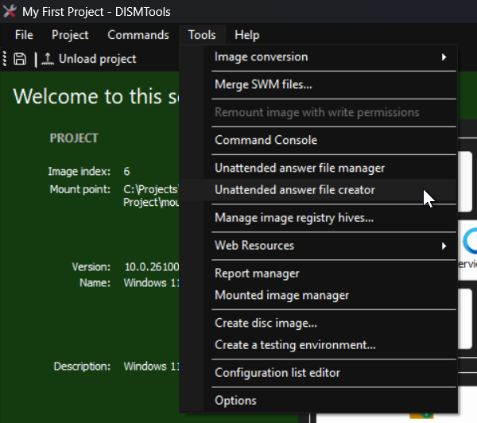
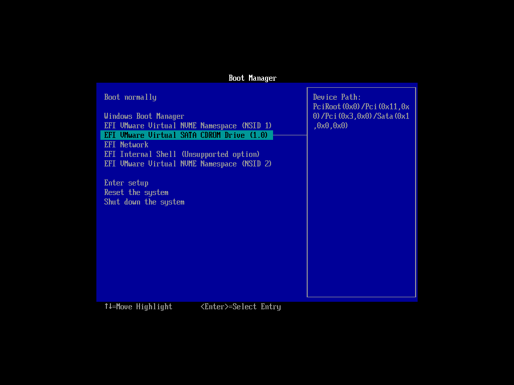

Installons votre image Windows sur quelques ordinateurs, d'accord ?
Accélérer le processus d'installation
L'une des exigences est que tous les ordinateurs disposent d'un compte local nommé "John Doe". Une autre exigence est de passer autant de questions que possible durant l'OOBE. Tout cela peut être entièrement automatisé avec un fichier de réponse silencieuse. Pour commencer à les créer, vous pouvez utiliser l'assistant de création. Pour y accéder, allez dans Outils puis cliquez sur Créateur de fichiers de réponse silencieuse.
Remarque :
Vous pouvez voir la boîte de dialogue suivante lorsque vous lancez cette tâche :

Cela peut arriver si vous n'avez pas le runtime .NET 9 pour bureau, qui est une exigence pour le programme générateur de fichiers de réponse. Vous pouvez procéder de deux façons : en téléchargeant le runtime .NET 9 pour bureau, ou en laissant DISMTools télécharger la version autonome après avoir cliqué sur Oui.
Notez aussi que l'exigence concernant le runtime .NET peut changer à l'avenir si le composant sous-jacent utilise un nouveau runtime.
Puis, vous pouvez suivre les étapes de l'assistant. Finalement, vous aurez un fichier de réponse silencieuse et arriverez à cet écran :

Sur cet écran, vous pouvez effectuer d'autres tâches avec l'assistant, comme créer un autre fichier de réponse ou ouvrir son emplacement. La tâche qui nous intéresse est l'application du fichier de réponse. Cliquez sur le troisième lien puis cliquez sur OK dans cette boîte de dialogue :

Enfin, enregistrez vos modifications. Maintenant, nous allons créer le fichier ISO.
Création du fichier ISO
Pour commencer la création de l'ISO, allez dans Outils puis cliquez sur Créer une image disque...

Remarque :
Cette tâche nécessite le Windows Assessment and Deployment Kit (ADK). Si DISMTools ne le détecte pas, il vous sera proposé de le télécharger et de l'installer automatiquement.

Cela peut prendre un certain temps, pendant lequel vous verrez des informations de progression :

Après l'installation, vous pourrez continuer normalement.
Vous verrez la fenêtre suivante :

Dans cette fenêtre, vous devrez suivre ces étapes
-
Choisissez votre image Windows. Vous pouvez la choisir à l'aide de l'un des 3 boutons en haut :
- Parcourir... vous permettra de spécifier une image Windows dans n'importe quel emplacement
- Choisir... vous permettra de spécifier une image parmi toutes les images montées. Vous verrez une liste dans laquelle vous pourrez la sélectionner
- Utiliser l'image montée utilisera l'image sur laquelle vous travaillez actuellement
- Choisissez une destination pour votre fichier ISO
- Cliquez sur Créer. Notez que, si le fichier ISO de destination existe, il sera écrasé ; et que vous devez vous assurer que l'image Windows a bien toutes ses modifications enregistrées
Pour résumer ces étapes, voici une image les illustrant :

Ce sont les étapes essentielles. Vous pouvez configurer d'autres options, comme la copie vers des lecteurs Ventoy, si vous le souhaitez. Mais, dans cet exemple, nous continuerons avec les paramètres par défaut. Après avoir cliqué sur OK, une nouvelle fenêtre apparaîtra. Cette fenêtre créera le fichier ISO que vous pourrez ensuite utiliser :

Cela prendra un certain temps, vous pouvez faire autre chose en attendant. Une fois la création terminée, vous pourrez utiliser votre fichier ISO. Vous pouvez :
- Utiliser votre fichier ISO dans une machine virtuelle
- Le flasher sur une clé USB avec Rufus
- Le copier sur un lecteur Ventoy
Nous allons continuer en installant le système d'exploitation dans une machine virtuelle.
Installation du système cible
Pour ce faire, démarrez votre système depuis l'ISO :
Puis, suivez les étapes de l'assistant d'installation :

Remarque :
Choisissez le disque ou le volume cible avec précaution, car vous pouvez supprimer tous les fichiers qu'il contient. Notez également l'index de l'image que vous modifiez au cas où l'image comprend plusieurs index.
Vous devriez avoir le système cible prêt bientôt. Cela prendra un certain temps, selon la vitesse de votre ordinateur. Voici les résultats que vous devriez obtenir avec votre image Windows :

Il s'agit d'une image composite où le seul changement est le fond d'écran. Vous devriez quand même voir le reste des modifications.
Remarques finales
Si vous disposez d'une salle informatique et souhaitez déployer cette image sur plusieurs ordinateurs en même temps, vous pouvez opter pour une installation via le réseau. Bien que cette visite ne couvre pas ce cas, vous pouvez apprendre comment le faire en consultant la documentation d'aide.
Remarque :
DISMTools ne prend en charge que Windows Deployment Services pour le moment, et le guide de la documentation d'aide est conçu pour cette solution de déploiement.
Félicitations ! Vous avez terminé la visite
Vous pouvez maintenant continuer à personnaliser et tester votre image Windows, ou démarrer un nouveau projet avec une nouvelle image. Les possibilités sont infinies. Si vous êtes perdu ou souhaitez en savoir plus sur ce que DISMTools propose, n'hésitez pas à consulter la documentation d'aide. Vous pouvez également ouvrir la visite à tout moment.